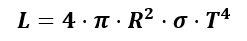

Una ecuación muy útil para determinar parámetros estelares es la ecuación de Stefan-Boltzmann, más conocida en astrofísica como ecuación LRT. Fue enunciada a finales del siglo XIX y su formulación es la siguiente:

Donde L una propiedad de las estrellas denominada luminosidad absoluta de la estrella. Representa la cantidad de luz (visible o no) que emite en cada segundo.
R es el radio de la estrella en metros, aunque habitualmente suele expresarse en radios solares. Por ejemplo, una estrella de 8 R¤ implica que es 8 veces más grande que el Sol. Como símbolo del Sol se usa el símbolo ¤.
T es la temperatura absoluta en la superficie de la estrella. Por tanto se mide en Kelvin.
s es una constante denominada constante de Stefan-Boltzmann.
Su valor es 5,6697 × 10-8 W· m-2· K4.
¿Y cómo se usa esta fórmula para medir el radio de una estrella?
Podremos conocer el tamaño de una estrella si somos capaces de determinar su luminosidad absoluta (L) y la temperatura de su superficie (T). De eso precisamente tratan los siguientes apartados.
Puedes acceder a un vídeo explicativo en el enlace: